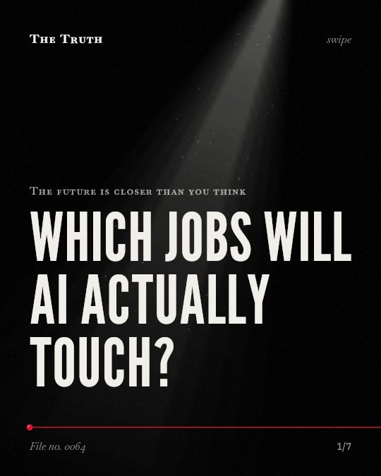

The future is closer than you think
Which jobs will AI actually touch?

AI exposure varies from 9.4 to 81.7 percent.
The impact of AI depends on your specific job category. Some roles show nearly total exposure, while others show very little. This evidence is mixed and based on preliminary studies.
Supported. At least one solid peer-reviewed study. The evidence is mixed.
What the research found
Some occupations register zero measured exposure purely for lack of chat traffic, which could be due to a slower adoption-lag.
“Anthropic’s own report naming occupations that register zero measured exposure purely for lack of chat traffic – though it cannot, on cross-sectional evidence alone, be distinguished from a slower adoption-lag explanation.”
Preprint, not peer reviewed, 2023. Eloundou et al., RePEc: Research Papers in Economics. This shows a link, not a cause.
Large language models can lead to more sustainable alternatives to current practices, but economic factors may cause a new combination of human and LLM-driven work rather than simple substitution.
“economic factors may cause widespread adoption to lead to a new combination of human and LLM-driven work, rather than a simple substitution.”
Study, 2024. Ren et al., Scientific Reports. This shows a link, not a cause.
Category-level coverage of AI exposure varies from 9.4 to 81.7 percent across 22 SOC major groups.
“Category-level coverage varies substantially (9. 4 to 81. 7 percent across 22 SOC major groups), supporting neither the claim that any category is immune to AI nor that any nears full automation.”
Preprint, not peer reviewed, 2023. Eloundou et al., RePEc: Research Papers in Economics.
ChatGPT shows promise in streamlining some jobs, especially those requiring memorization, but it also presents challenges like ethical implications and AI security.
“Findings revealed ChatGPT’s promise in streamlining some jobs, especially those requiring memorization. Moreover, we highlighted ChatGPT’s challenges and limitations, such as ethical implications, LLM limitations, and Artificial Intelligence (AI) security.”
Study, 2024. Nowrozy, Informatics.
A GenAI-assisted package with human-in-the-loop verification was associated with higher case-analysis performance and greater behavioral engagement in one nonrandomized cohort.
“A multicomponent GenAI-assisted, 4-act progressive-disclosure CBL package implemented with rigorous human-in-the-loop verification was associated with higher case-analysis performance, modestly higher delayed examination performance, and greater behavioral engagement in one nonrandomized cohort.”
Experiment, 2026. Su et al., JMIR medical education.
Substitution is not the only path.
Economic factors may create a combination of human and LLM-driven work rather than simple replacement. Human-in-the-loop verification is linked to higher performance in some cases.
Your role may evolve into a hybrid.
That may be why your work feels different. You might not be replaced by a machine. Instead, your tasks may become a collaboration between your judgment and an LLM.
This part is our reading of the evidence, not a finding.
A screen reflects a new workflow.
You sit at your desk. You type a prompt. You review the output and correct the errors before you hit send. You are the filter for the machine.
The honest summary
The evidence shows that AI impacts vary widely by occupation and may lead to complex human-AI collaborations rather than total automation.
Many findings are based on preliminary studies, nonrandomized cohorts, or lack peer review.
Which part of your work remains uniquely yours?
Sources
- Tyna Eloundou, Manning, Sam, Pamela Mishkin et al. (2023). GPTs are GPTs: An Early Look at the Labor Market Impact Potential of Large Language Models. RePEc: Research Papers in Economics. Preprint, not peer reviewed, cited 539 times.
- Shaolei Ren, Bill Tomlinson, Rebecca W. Black et al. (2024). Reconciling the contrasting narratives on the environmental impact of large language models. Scientific Reports. Study, cited 62 times.
- Raza Nowrozy (2024). GPTs or Grim Position Threats? The Potential Impacts of Large Language Models on Non-Managerial Jobs and Certifications in Cybersecurity. Informatics. Study, cited 9 times.
- Su P, Hu M, Chen C, Xu S (2026). Generative AI-Assisted Progressive-Disclosure Case-Based Learning for Clinical Reasoning in Occupational Medicine: Quasi-Experimental Study. JMIR medical education. Experiment.
Also read for this file, not quoted
This file was researched and drafted by software, then checked by rules a model cannot talk its way around: each quote above was matched word for word against the paper, and every number had to appear in it. How files are made.